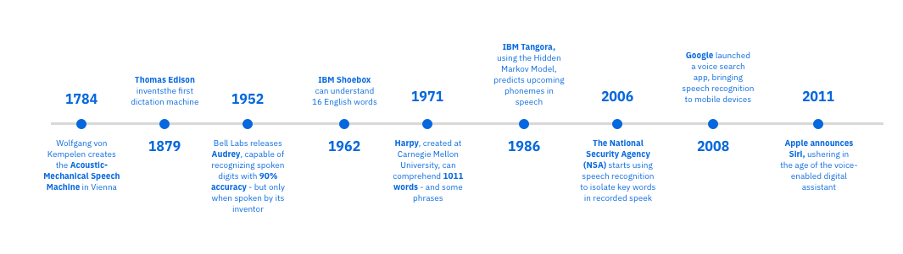

JS Conf Budapest
Accessibility vs latest Web APIs. Can’t we just get along?

- Accessbility on the web
- Web Speech API (SpeechRecognition)
- Ava, Spotify App examples
History of Speech Recognition

export const createRecognition = (init: SpeechInit): SpeechRecognition => {
const SpeechRecognition = (window as any).SpeechRecognition
|| (window as any).webkitSpeechRecognition;
const SpeechGrammarList = (window as any).SpeechGrammarList
|| (window as any).webkitSpeechGrammarList;
const recognition = new SpeechRecognition();
const recognitionList = new SpeechGrammarList();
recognition.maxAlternatives = init.maxAlternatives;
recognition.interimResults = init.interimResults;
recognition.lang = init.lang;
abstractCommandFactory.getGrammarStream()
.subscribe((grammars: string) => {
console.log(`
> ⚡️ This is our currently registered grammar stream:
> It uses the JSpeech Grammar Format (JSGF.)
> 📚 ${grammars}
`)
return recognitionList.addFromString(grammars, 1);
});
recognition.grammar = recognitionList;
return recognition;
};
Intent
export const navigateIntent: IntentProps = IntentFactory({
type: Intent.navigate,
samples: [
'good playlist',
'go to playlist',
'show my playlists',
'show my playlist',
'call list',
'ok list',
'so playlist',
'musica',
'mi musica',
'enseñame los playlists',
'zeig meine playlists'
],
action(id: string) {
return handleRouter(`/playlists/${id}`, id);
}
});


- guarantee it works after release
- Schedule tests
- Cucumberjs
- Bdd scenarios
- Avoid disrupting real users, space out tests
- Clean up data after testing